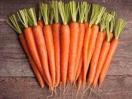

Tips on Healthy Eating
1. Slow down on the sodium
2. Pile up on the fruits and vegetables
3. Eat less fats
4. Cook at home- Cooking at home is not only a great way to make sure the ingredients are healthy, but portions are correct.
5. Base your meals on starchy carbohydrates- Some people think starchy foods are fattening, but gram for gram the carbohydrate they contain provides fewer than half the calories of fat.
6. Eat lots of fruits and vegetables.
7. Eat more fish- Fish is a good source of protein and contains many vitamins and minerals. Aim to eat at least two portions of fish a week, including at least one portion of oily fish. Oily fish contains omega-3 fats, which may help to prevent heart disease.
8. Cut down on saturated fats and sugar.
9. Eat less salt.
10. Be active.
11. Keep Drinking- We need to drink plenty of fluids to stop us getting dehydrated. The government recommends 6-8 glasses every day. Even unsweetened fruit juice and smoothies are high in free sugar. Your combined total of drinks from fruit juice, vegetable juice and smoothies should not be more than 150ml a day – which is a small glass.
12. DON'T SKIP BREAKFAST!!
Brain Stimulating Foods
Almonds- Almonds contain lots of healthy fats, fiber, protein, magnesium and vitamin E. The health benefits of almonds include lower blood sugar levels, reduced blood pressure and lower cholesterol levels. They can also reduce hunger and promote weight loss.
Avocados- Avocados are full of monounsaturated fat and nutrients, such as potassium, B vitamins, 11 different carotenoids, and vitamin E.
Beans- Beans are good for digestion. Beans contain both soluble and insoluble fiber, so they work double to keep your digestive system running smoothly. The first slows down digestion, which gives you that full feeling, and the second helps prevent constipation.
Beetroots- Beetroot juice can lower blood pressure in men. The body converts nitrates into nitric oxide in the body. The nitric oxide then relaxes blood vessels and increases oxygen and blood flow, therefore, lowering blood pressure.
Blueberries- Blueberries are a good source of vitamin K. They contain vitamin C, fiber, manganese and other antioxidants.
Broccoli- It is said to be a great source of vitamin K and C. It also provides potassium and fiber. Vitamin C – builds collagen, which forms body tissue and bone, and helps cuts and wounds heal. Vitamin C is a powerful antioxidant and protects the body from damaging free radicals.
Broth- Bone broth helps the digestive system expel waste, promotes the liver's ability to remove toxins and helps maintain the tissues.
Carrots- Carrots contain vitamin A, antioxidants, and other nutrients. Evidence suggests that eating more antioxidant-rich fruits and vegetables, such as carrots, can help reduce the risks of cancer and cardiovascular disease. Carrots are also rich in vitamins, minerals, and fiber. On the other hand, eating too many carrots can bring in too much beta-carotene. Beta-carotene is the molecule responsible for carrots' bright orange hue and a precursor of vitamin A. This can lead to excess blood carotene which can discolor the skin.
Celery- This vegetable is rich in vitamin K, folate, vitamin A, potassium, and vitamin C. It is mainly water, but it is also a good source of dietary fiber.
Coffee- A 2013 study found that drinking caffeinated coffee acts as an antidepressant and significantly reduces the risk of suicidal tendencies.
Dark chocolate- Eating dark chocolate is good for your memory, blood pressure, and your mood. It helps alleviate depression and also acts as an anti-inflammatory. An anti-inflammatory is a substance that reduces swelling and burning.
Egg Yolk- Egg yolks contain essential long chain fatty acids like omega 3 and omega 6, which are necessary for functioning of the brain and retina. Moderate consumption of egg yolk also provides healthy hair, improves body's reproductive system and body's response to injury.
Green Tea- Green tea is the healthiest beverage on the planet. It is loaded with antioxidants and nutrients that have powerful effects on the body. These include improved brain function, fat loss, a lower risk of cancer and many other impressive benefits.
Kale- Kale is high in fiber and water. Fiber and water both help prevent constipation and promote a healthy digestive tract. It also contains vitamin B, and vitamin C, which promotes iron absorption.
Olive Oil- Even though it’s not a solid, its still in the food category. Extra virgin olive contains Vitamin E, which is a powerful antioxidant that helps protect the body from the damage caused by free radicals, called oxidative stress. Over time, oxidative stress can lead to cancer.
Onions- Onions contain fiber and folic acid. Folic acid is a B vitamin that helps the body make healthy new cells.
Oranges- Oranges contain vitamin C, fiber, potassium and choline, which are all good for your heart. The potassium found in oranges is said to help lower blood pressure and lower your risk of a stroke. Our eyes suffers from damage as we grow older. Oranges are rich in nutrients like Vitamin A, Vitamin C and potassium which are great for your eyes. So, if you want your vision to be just as good as it is now, eat an orange every day!
Pumpkin Seeds- These seeds contain magnesium and help to regularize blood pressure levels. Pumpkin seeds contain Serotonin, a neurochemical, which is also known as nature's sleeping pill.
Red Wine- This alcoholic beverage has the ability to improve cholesterol, fight radical damage, help manage diabetes, and fight obesity.
Salmon- Wild salmon is loaded with protein that helps with brain, nerve and eye development. As the body can't make omega-3 fatty acids, the best way to obtain them is through the food we eat.
Spinach- Leafy greens high in vitamin C are crucial for the building and structure of skin and hair. Lack of iron is a common cause of hair loss, which is prevented by a reasonable intake of iron-rich foods, such as spinach.
Sunflower Seeds- Sunflower seeds contain minerals that help to regulate blood pressure. These minerals include, calcium, potassium and magnesium. Each one of those minerals play a beneficial role in keeping blood pressure in normal ranges.

Tomatoes- Tomatoes are a rich source of lycopene, beta-carotene, folate, potassium, vitamin C, flavonoids, and vitamin E that protects lipoproteins and vascular cells from oxidation, which is what causes plaque to build up in your arteries.
Walnuts- These nuts are rich in omega-3 fats. Eating walnuts improves brain health while also helping to prevent heart disease and cancer.